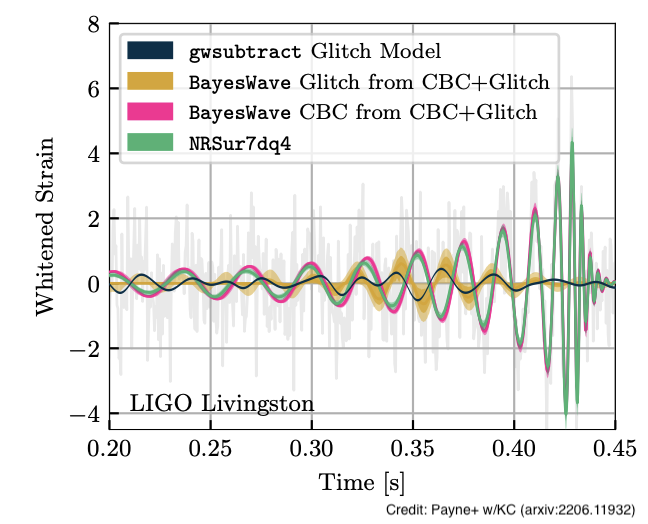
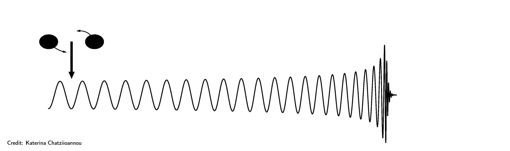
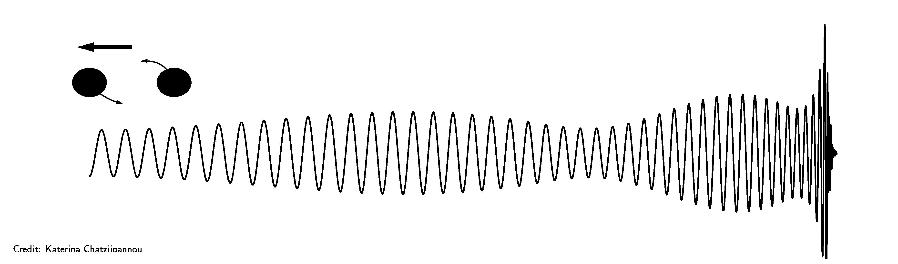
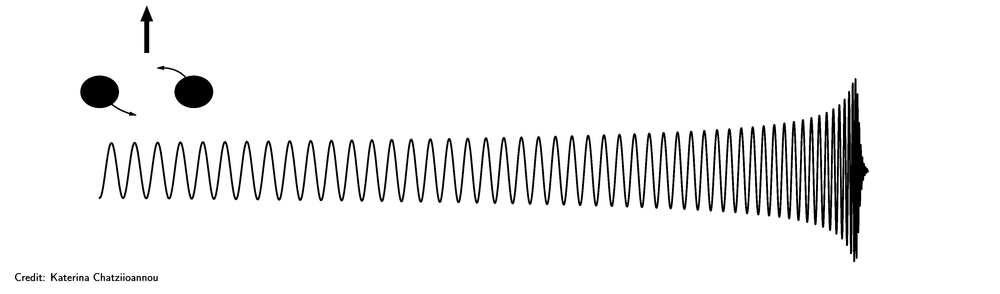
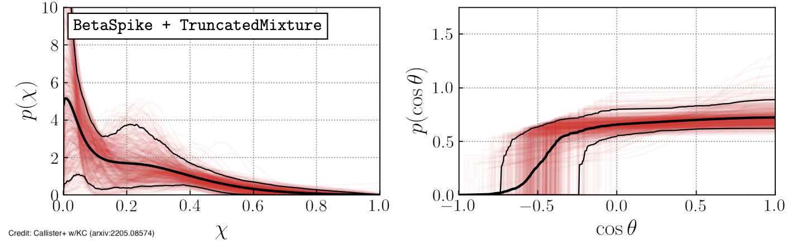
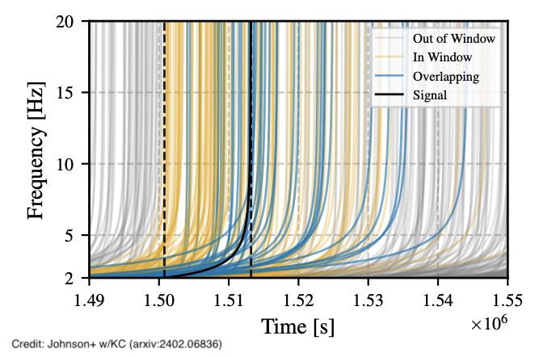

LIGO and ground-based detectors
The twin LIGO detectors and its partners, Virgo and KAGRA, have made dozens of detections of merging neutron stars and/or black holes in the stellar-mass range. As part of the LIGO Laboratory at Caltech and the LIGO Scientific Collaboration, we analyze data from the ground-based LIGO detectors to infer the properties of merging black holes and neutron stars and contribute to papers prepared by the LIGO, Virgo, and KAGRA collaborations.Instrumental glitches and astrophysical inference
Besides genuine astrophysical signals, the LIGO data also contain instrumental excess power, known as glitches. With diverse morphology, glitches can masquerade as a real signal or overlap with one and bias measurement of the source properties. The very first neutron star binary detection, GW170817, overlapped with a glitch that was ~30 times louder than the signal. We develop methods to mitigate the impact of glitches on astrophysical inference. Our approach simultaneously models all data components, including the compact binary signal, the detector noise, and the glitch with a combination of modeled and morphology-independent analyses. We apply our method on real data of signals that overlap with glitches to subtract the latter and ensure that astrophysical inference on the former is robust. The plot examines the impact of an overlapping glitch on GW200129 and its measurement of spin-precession, from a study led by Caltech graduate students Ethan Payne, Jacob Golomb, and Sophie Hourihane.
The spins of black holes and neutron stars
In General Relativity the spins of compact objects interact gravitationally and thus affect the signal emitted during a binary inspiral.
The length of a gravitational wave signal is affected by the amount of black hole spin aligned with the binary's orbital angular momentum. When the spin is positive (pointing "up" in a right-handed sense), the binary has more total energy and angular momentum that needs to be emitted before merger, leading to a longer coalescence. When the spin is negative (pointing "down") the signal is shorter.
Spin in the orbinal plane (perpendicular to the binary's orbital angular momentum) causes spin-precession: the spins and the orbital angular momentum precess in space. Since gravitational waves are emitted primarily in the direction of the orbital angular momentum direction, spin-precession causes ampitude and phase modulations in the signal as seen by an observer.
A mixture of spins with both aligned and in-plane components affect both the length and the shape of the signal. Measuring the length of a signal is easier than identifying amplitude modulations, so we can place more stringent contraints on aligned spins. For a few gravitational wave events we have also been able to constrain in-plane spins, leading to insights about the astrophysical environments in which these binaries are formed.

The effects of in-plane spins can be measured from the merger phase of heavy black hole binaries. We are interested in understanding how in-plane spins affect the merger phase, where no analytic models exist. Caltech graduate student Simona Miller led a study that examined subsets of data in the time domain to understand the imprint of spins across the signal. The plot shows our results for GW190521, the heaviest binary detected to date. We showed how inference of spin-precession originates from the final pre-merger cycle.
In addition to individual events, we also analyze the ensemble of detections to infer the astrophysical population of black holes. Tom Callister, a postdoctoral scholar from the University of Chicago, and Caltech graduate student Simona Miller led a study that answered two key astrophysical questions about black hole spins: do most black holes have exactly zero spins and are there binaries with negative aligned spins? We found that black holes are consistent with small, but non-vanishing, spin and binaries with negative spins exist. These results inform models of stellar evolution and collapse to black holes as well as whether black hole binaries form isolated in the field or in dense, dynamical environments.
Future data analysis challenges
Proposed next-generation detectors beyond LIGO are being designed to be able to observe black hole and neutron star binaries almost to the edge of the Universe. To prepare for these signal-rich data sets we are transfering knowledge and expertise from LISA data analysis to address issues such as multiple overlapping sources and noise non-stationarity. The plot shows a simulated future detector data set where multiple neutron star binary signals coincide in time and overlap in time-frequency. This study, led by Caltech postdoctoral scholar Aaron Johnson, found that even hundreds of overlapping signals will not lead to significant source confusion.